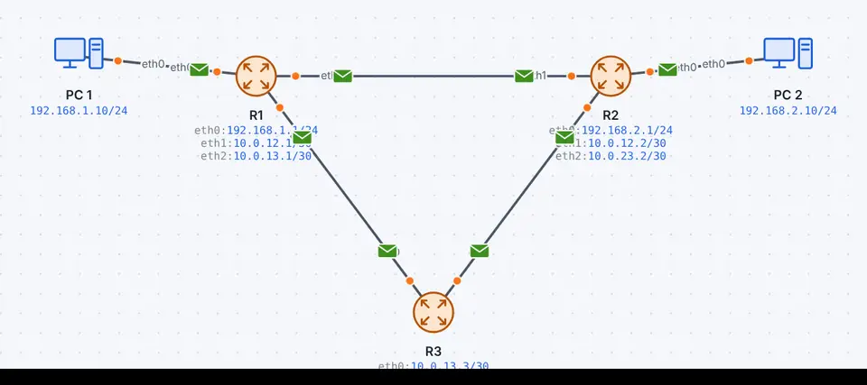
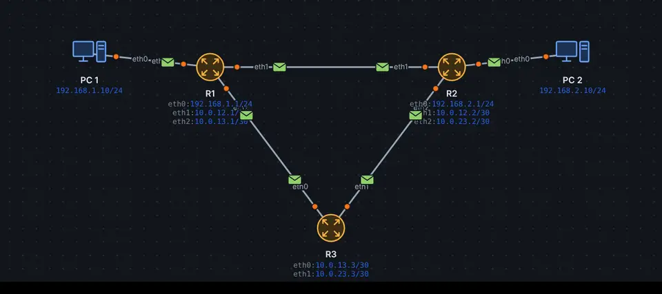

Bei OSPF (Open Shortest Path First) kennt jeder Router die ganze Landkarte seines Bereichs (Area): welche Router es gibt und welche Verbindungen mit welchen Kosten. Daraus berechnet jeder selbst mit dem Dijkstra-Algorithmus die kürzesten Wege. Fällt eine Leitung aus, verbreitet sich die Änderung sofort, und alle rechnen neu.
Ablauf
Hello: Router senden regelmässig Hello-Pakete an 224.0.0.5. Wer antwortet und dieselben Werte hat (Area, Netz, Intervalle), wird Nachbar.
Datenbankabgleich: Nachbarn tauschen Beschreibungen (DBD) aus, fordern fehlende Einträge an (LSR) und schicken sie (LSU), bestätigt mit LSAck.
SPF-Berechnung: Jeder Router berechnet aus der Datenbank seine Routen; sie erscheinen mit «O» in der Tabelle.
Die Router-ID ist die höchste Loopback-Adresse, sonst die höchste Interface-Adresse. Die Kosten eines Anschlusses lassen sich einstellen; der Weg mit der kleinsten Summe gewinnt.


Zeitlupe OSPF in der Simulation: Hello-Pakete und Austausch der Routen
Einrichten
Router(config)# router ospf
Router(config-router)# network 10.0.0.0/24 area 0
Router(config-router)# network 192.168.1.0/24 area 0
Router# show ip ospf neighbor
Router# show ip route
OSPFv3 macht dasselbe für IPv6: Nachbarn über Link-Local-Adressen, Konfiguration je Anschluss statt mit network.
OSPF oder RIP?
OSPF konvergiert schneller, rechnet mit Kosten statt Hops und skaliert besser. RIP und RIPng ist einfacher zu verstehen und für kleine Netze ausreichend.
So geht es in leyoNET
Derselbe Text wie in der Hilfe der App (Taste F1).
OSPF
OSPF ist ein Link-State-Protokoll: Jeder Router beschreibt seine Verbindungen (LSA), alle sammeln diese Karte und berechnen mit Dijkstra die kürzesten Wege.
Hello findet Nachbarn (Standard alle 10 s, im Simulator verkürzt auf 2 s) (Multicast 224.0.0.5)
DBD, LSR, LSU, LSAck gleichen die Datenbank ab, bis der Nachbar Full ist
Kosten pro Schnittstelle (Standard 10), einstellbar mit ip ospf cost
CLI: router ospf, network 10.0.0.0/24 area 0 (oder mit Wildcard 0.0.0.255), show ip ospf neighbor.
OSPFv3 (IPv6)
OSPFv3 (RFC 5340) ist OSPF für IPv6. Der Ablauf ist derselbe wie bei OSPF: Hello, DBD, LSR, LSU, LSAck, dann Full und Dijkstra. Unterschiede:
Die Router sprechen über ihre Link-Local-Adressen; Hellos gehen an ff02::5, IPv6 Next Header 89.
Man nimmt Anschlüsse auf, nicht Netze (in FRRouting ipv6 ospf6 area 0 am Interface).
Die Router-ID bleibt eine 32-Bit-Zahl in IPv4-Schreibweise. Hat ein Router keine IPv4-Adresse, sollte man sie setzen (der Simulator bildet sonst eine aus der MAC).
Router-LSAs beschreiben nur die Verbindungen, die Netze stehen in Intra-Area-Prefix-LSAs.
Der nächste Hop in der Routingtabelle ist die Link-Local-Adresse des Nachbarn.
CLI: router ospf6, ospf6 router-id 1.1.1.1, interface eth0 area 0, show ipv6 ospf6 neighbor, show ipv6 ospf6 database, show ipv6 route (Code O). Layer-3-Switches sprechen OSPFv3 auf ihren VLAN-Interfaces.
Vereinfacht wie OSPFv2: keine DR/BDR-Wahl, keine Netz- und Link-LSAs, eine Area.
Beispiel ansehen
OSPF
Drei Router im Dreieck lernen ihre Netze per OSPF.
Hello, DBD, LSU, LSAck in der Paketliste; die Routing-Tabelle füllt sich mit O-Routen. Danach ein Kabel entfernen: OSPF rechnet neu.
Dieselben drei Router wie bei OSPF, aber nur mit IPv6: Sie lernen ihre Präfixe per OSPFv3.
Hellos an ff02::5 von den Link-Local-Adressen, danach DBD, LSR, LSU, LSAck. Die IPv6-Routingtabelle füllt sich mit O-Routen; tracert geht über den kürzesten Weg.
«Live ansehen» öffnet das Netz in leyoNET, die Simulation läuft in einer Schleife. In der App findest du es unter Datei → Demo-Netze, mit Führung Schritt für Schritt.
In leyoNET unter Werkzeuge → Aufgaben-Katalog. Jede Übung prüft sich selbst.
Was leyoNET vereinfacht
Protokoll
Schicht
Vereinfachung in der Simulation
OSPFv2
3
Router-LSAs und externe LSAs (Redistribution), keine Summary-LSAs zwischen Areas, kein DR/BDR (Nachbarn wie Punkt-zu-Punkt); Hello 2 s statt 10 s; hängt ein Datenbankabgleich (verlorenes DBD/LSR/LSU), wird er nach zwei Hello-Intervallen wiederholt; Hellos aus einem fremden Subnetz bilden keine Nachbarschaft
OSPFv3
3
Wie OSPFv2, aber über IPv6 (Next Header 89, ff02::5, Absender Link-Local); Anschlüsse statt Netze, Router-LSAs plus Intra-Area-Prefix-LSAs, AS-External-LSAs; Prüfsumme über den IPv6-Pseudo-Header; Router-ID ohne IPv4 aus der MAC; keine Link-LSAs, kein DR/BDR
RIP und RIPngDistanzvektor-Routing: Router erzählen ihren Nachbarn, welche Netze sie in wie vielen Hops erreichen – einfach, aber mit Grenzen.
Statisches RoutingRouten von Hand eintragen: Zielnetz, Maske und Next Hop, Standardroute, Hin- und Rückweg und die häufigsten Fehler.
Wie Routing funktioniertStandardgateway, Routing-Tabelle, längstes Präfix und administrative Distanz – und wann man statisch, automatisch oder dynamisch routet.